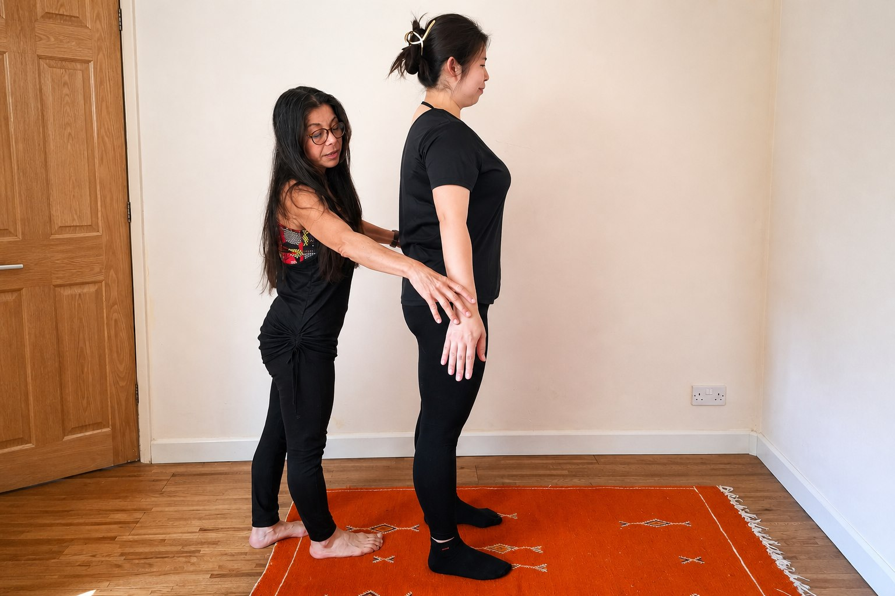
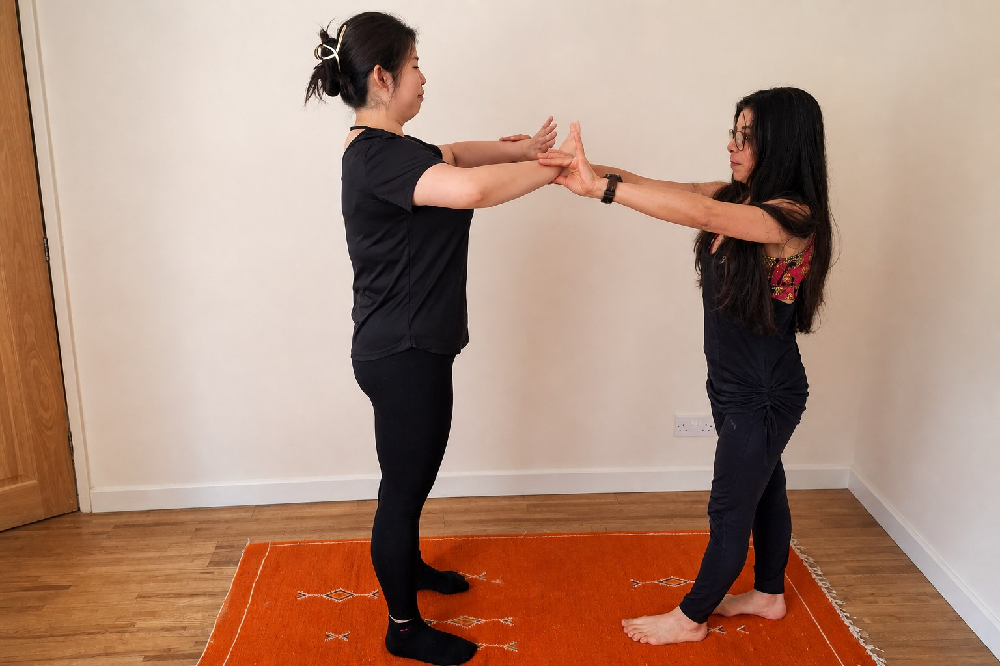
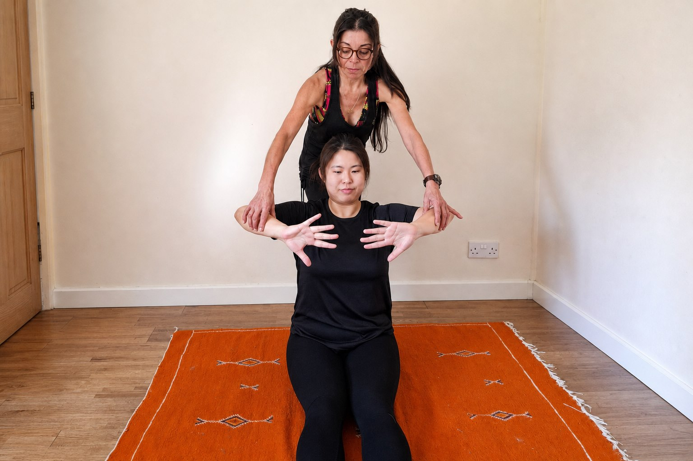
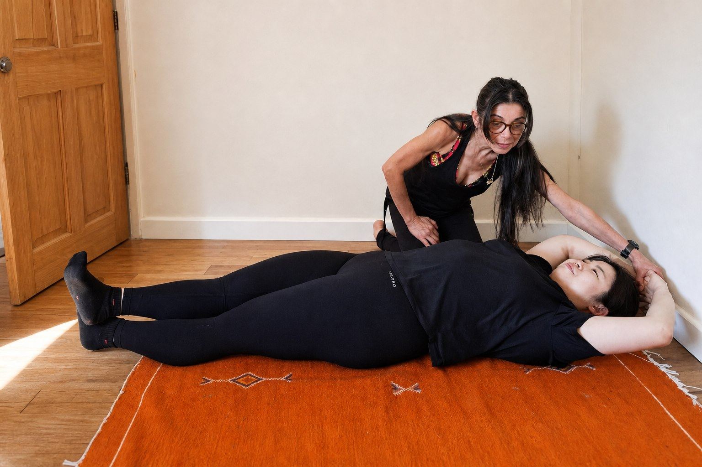

Posture
Clear positions and alignment before moving forward.
Hypopressive training in Nottinghamshire
A low-impact system using posture, breathing, and controlled abdominal activation to support the core, pelvic floor, and posture.
Clear positions and alignment before moving forward.
Guided technique, control, and gradual progression.
Low-pressure focused work adapted to your level.
What are hypopressives?
Hypopressives are a series of postural and breathing exercises that work with the deep core, diaphragm, and pelvic floor.
Unlike traditional abdominal exercises, hypopressives focus on reducing pressure through the abdomen while improving body control, alignment, and breathing technique.
How it can support you
Sessions can support core awareness, pelvic floor function, posture, alignment, breathing technique, and general body confidence.
Some people are interested in hypopressives for postnatal recovery when suitable, respiratory technique, a flatter-feeling abdominal area, or back pain and posture concerns.
History
Hypopressives were first developed by Dr Marcel Caufriez, a physiotherapist, in Spain. He used the method in a clinical setting for patients with pelvic floor disorders.
Over the past 35 years, it has developed into a whole-body system of training.
Who may benefit?
Every person is different, so sessions are adapted to your needs, experience, and comfort level. You do not need previous experience, and [INSTRUCTOR_NAME] will guide you step by step.
If you have a medical condition, pelvic pain, prolapse, pregnancy, recent surgery, back pain, or any concerns, please speak to a qualified healthcare professional before starting.
About me
My name is [INSTRUCTOR_NAME], and I am a trained hypopressive instructor.
I help people learn hypopressives in a calm, simple, and supportive way. My goal is to make the technique easy to understand, so you feel confident practising safely and correctly.
In my sessions, I focus on good posture, clear breathing guidance, and gradual progression.

Qualifications: [QUALIFICATIONS]
Inside a session
Sessions can move from standing posture work to seated and floor-based guidance, with clear coaching throughout.







Contact me
Contact [INSTRUCTOR_NAME] directly to ask a question, check whether sessions are suitable for you, or book a session.
Please do not send private health information through a public website. If you are unsure whether hypopressives are suitable for you, speak to a qualified healthcare professional first.
FAQ
No previous experience is needed. [INSTRUCTOR_NAME] will guide you step by step.
Sessions usually include posture work, breathing guidance, controlled abdominal activation, and focused coaching.
It may suit many people, including postnatal women when suitable, menopausal women, men over 50, athletes, and regular exercisers. Suitability depends on the individual.
Yes, if you have a medical condition, pelvic pain, prolapse, pregnancy, recent surgery, back pain, or any concerns.
[SESSION_FORMAT]
Contact [INSTRUCTOR_NAME] by phone, email, or WhatsApp to ask questions or book a session.